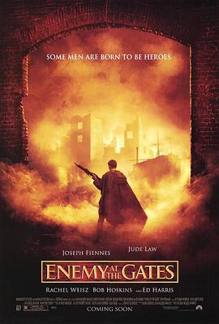

兵临城下 / Enemy at the Gates
又名：决战中的较量 / 大敌当前(台) / 敌对边缘(港) / Stalingrad
瓦西里就是狙击手的代名词。前半段与狙击对决相比太脱节，做爱很酷
作品信息
| 导演 | 让-雅克·阿诺 |
| 编剧 | 让-雅克·阿诺 / 阿兰·戈达尔 |
| 主演 | 裘德·洛 / 艾德·哈里斯 / 蕾切尔·薇兹 / 约瑟夫·费因斯 / 鲍勃·霍斯金斯 / 朗·普尔曼 / 埃娃·马特斯 / 加布瑞尔·汤姆森 / 马蒂亚斯·哈比希 / 索菲·罗伊斯 / 伊万·舍甫多夫 / Mario Bandi / 汉斯·马丁·施蒂尔 / 克雷蒙斯·施伊克 / Mikhail Matveev / 莱恩·库德里亚维斯基 / 马克西姆·科瓦莱夫斯基 / 格纳迪·文格洛夫 / 达·范·汉森德 / Markus Majowski / 罗伯特·施塔德洛伯 / 霍尔格·汉德克 / 马克·比肖夫 / 马克·扎克 / Thomas Petruo / 汤姆·弗拉席亚 / Dana Cebulla / 维尔纳·德恩 / 波热尔·尤内尔 / Vladimir Vilanov / 迈克尔·施内克 / Axel Neumann / Toby Cockerell / 埃迪·约瑟夫 / Martin Glyn Murray / 瓦伦丁·普拉塔里努 |
| 类型 | 剧情 / 历史 / 战争 |
| 制片国家/地区 | 爱尔兰 / 英国 / 法国 / 德国 / 美国 |
| 语言 | 英语 / 德语 / 俄语 |
| 上映日期 | 2001-07-21(中国大陆) / 2001-02-07(柏林电影节) / 2001-03-16(英国/美国) |
| 片长 | 131 分钟 |
| IMDb | tt0215750 |
最后一次看到是 2026-08-12T21:13:15+08:00 · 豆瓣原页